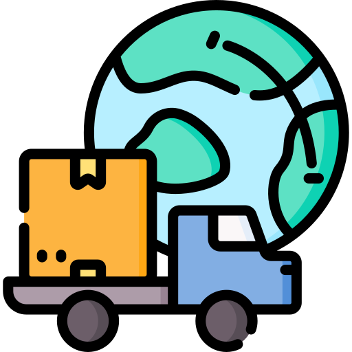
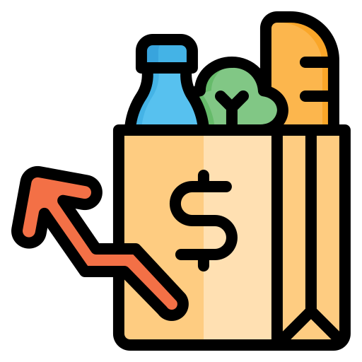
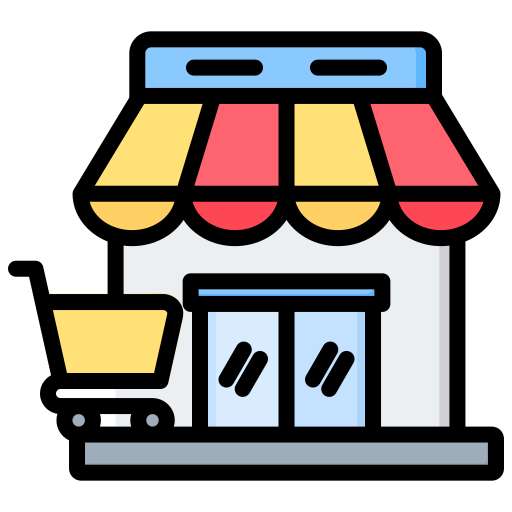
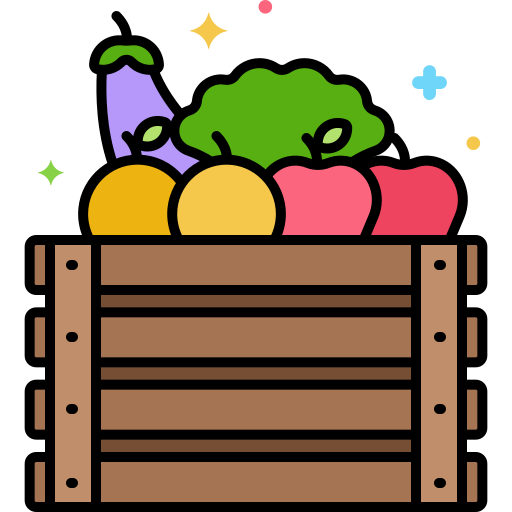

--:--
Many supermarkets and retail parks are built on the outskirts of cities. Shopping often requires a car, making daily life less accessible and increasing traffic.

Price competition encourages imports from across Europe and the world. Local producers struggle to compete, while long supply chains increase transport emissions and dependence on global markets.

Since 2021, food prices in France have increased by around 20%, forcing many households to reduce the quality or quantity of the food they buy.

Small shops spread throughout neighbourhoods make everyday life easier. Essential services should be within walking distance, reducing both car use and empty city centres.

Prioritising seasonal and locally produced food supports nearby farmers and reduces transport emissions. Short supply chains benefit both producers and consumers.
Cooperative supermarkets such as Scopéli in Nantes are owned by their members, who contribute a few hours of work each month. This model offers quality products at much lower prices while giving customers a say in how the store operates.